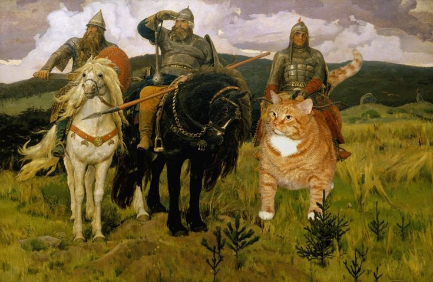
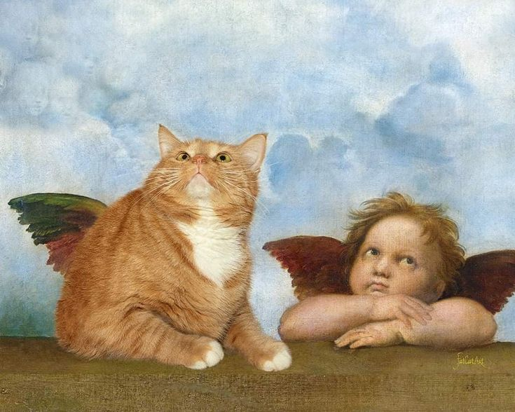
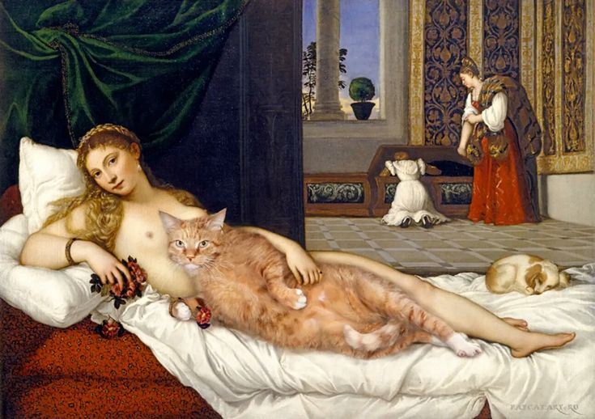

Искусство, которое улыбается
Классика получает хвост, усы и характер.
Это арт-пространство, где шедевры искусства переосмыслены через юмор, цитату и пародию. Коты здесь не просто милый прием — они становятся мостом между высокой культурой и живым, понятным зрителю опытом.
↓ Листайте вниз: там много интересного!


Наша миссия
Мы сближаем зрителя и искусство
Галерея не требует от посетителя специальной подготовки. Она приглашает смотреть, улыбаться, сравнивать и замечать детали. Через знакомый образ кота зритель легче входит в мир живописи, композиции и художественных цитат.
«Юмор здесь не разрушает искусство, а открывает к нему новый вход»
Именно поэтому наша галерея строится как пространство диалога: между прошлым и настоящим, оригиналом и пародией, серьезным и игривым.
Значимость галереи
Ее ценность в том, что она разрушает дистанцию между «высоким искусством» и повседневной культурой. Пародия здесь работает как инструмент образования: через иронию зритель запоминает сюжет, замечает структуру картины и лучше понимает, как создаются художественные смыслы. Особенно сильный эффект наше арт-пространство дает для тех, кто обычно чувствует себя неуверенно в классической галерее — здесь вход мягче, а интерес возникает естественно.
Коты как универсальный символ
Почему именно коты
Коты легко становятся универсальным образом, потому что они объединяют противоположности: грацию и нелепость, независимость и домашний уют, величие и смешную уязвимость. Именно поэтому они так органично входят в пародийную живопись.
Что они дают галерее
- моментальное узнавание;
- эмоциональную теплоту;
- игру с символами и стереотипами;
- мост между элитарным и массовым восприятием.
Экспозиции галереи
A
Классика с котом
Известные полотна, где кот вписан так, будто он был там всегда: в композиции, цвете и настроении.
B
Пародийные ремиксы
Работы, которые играют с легендарными картинами, меняют детали и создают новую, ироничную версию сюжета.
C
Кото-портреты
Отдельные экспозиции, где кот становится главным героем, а зритель считывает его характер как у полноценного персонажа искусства.
Коллекция и галерея
Посетителям
Что предоставляет галерея
✓Аудиогид и короткие пояснения к каждой работе.
✓Интерактивную галерею с быстрым открытием подробностей.
✓Материалы, которые помогают понять, как устроена пародия и цитата в искусстве.
Для кого это место
Для тех, кто любит искусство, для тех, кто любит котов, и для тех, кто только начинает интересоваться культурой. Здесь легко задержаться над одной работой дольше, чем планировал, потому что у каждой картины есть и юмор, и история, и свой характер.